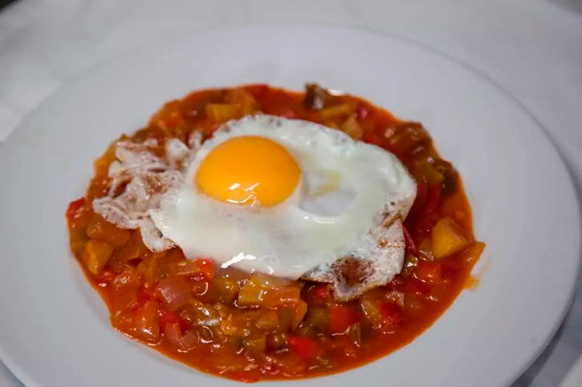
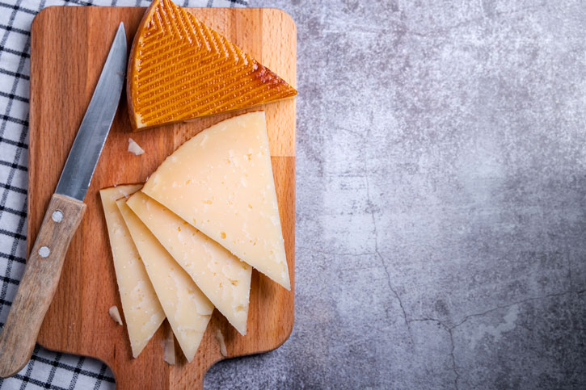

| Overview | Food | Architecture | Things to Do | History |

Pisto Manchego
Like the city itself, Toldeo's food scene has been influenced by many different cultures and time periods, giving it a unique culinary heritage. Like much of the other food in the La Mancha region of Spain (and of Spain as a whole), the main food staples in food from Toledo are eggs, rice, tomatoes, bread, and meat of some kind, typically pork or fish. One food that is unique to Toledo is Manchego cheese. This cheese is produced in the surrounding La Mancha region from sheep of the Manchego breed and it is the most famous and commercialized cheese from Spain. It has a very strong and tasty savory flavor, and pairs best with plain bread and a dry wine. Marzipan is also a unique cultural food of Toledo, made with eggs, sugar, and almonds, making it a perfect sweet treat to end a visit to the city. Other food staples include Cuchifrito, which are fried pork bites, Truchas a la Toledana, a type of fish, and my personal favorite, Pisto Manchego, which is a fried egg over a vegetable stew of sorts, typically served with bread.

Manchego Cheese